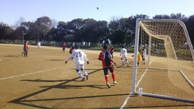
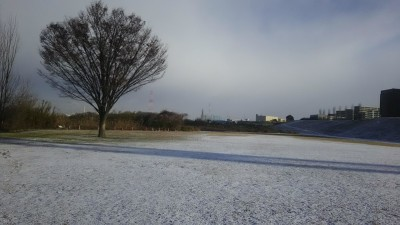
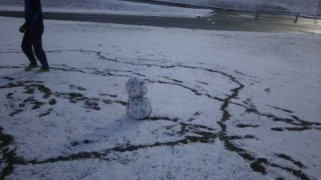
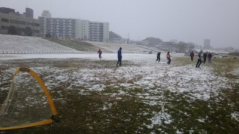

昨日は皆さんお疲れ様でした。
まっさんも足をお大事に。
僕は体重が増えたせいか、前よりさらに動けなくなっております。T^T後半の方は、すでに足がつっておりました。ボランチでしたが、自分の中でのポジションは、「声だし」というポジションでした。
ハイタッチのくだりは、ゆっきーの僕へのいじりのクセがすごいからです。
ちなみに、こーへんのかい。は、吉田裕とすっちーです。なかやまきんにくんは、筋肉ルーレットや、アーノルドシュワル、、、、ツェネガー！です。火曜日にR1グランプリがあるのでギャグを予習しておいて下さい。(￣ー￣)次回までにアキラ100%のギャグをマスターしておいて下さい。(￣▽￣)期待。
ともあれ、皆さんお体には、くれぐれも気をつけて下さいね。健康あってのサッカーですので！強いチーム相手なのに良い結果だったと思います。
今日はいい天気でしたが、やっぱり心は曇り模様でした。うちのチームが創設して対外試合を始めてから初めてメンバーが足りませんでした。その中でもたとえ少しの時間でも参加や怪我が心配の中参加して頂いたメンバーの方には感謝の気持ちしかありません。
もちろん、本日欠席だった人がわざととか悪いとかは思ってませんが、覚えておいて頂きたいのは僕が用意した練習や試合に時間が空いてたら参加すればいいという気持ちは持たないでください。やっぱりみんなあってのチームです。特に試合の時はかなり前に予定はUPしています。規約にも書いていますがどうせ違う人が参加するから何とかなるやろではなくて、ギリギリだと大変だし、怪我人とかも考えたりしたら参加出来るように努力しようという気持ちは持って欲しいと思います。調整してもどうしても無理なら仕方ないですが、試合も練習もメンバーとしては参加するために調整の意識をお願いしますね。
さて、話は変わりますが本日はYODRIDさんの主催でアモールFCさんとの巴戦でした。お誘いして頂いたYODRIDさん、そして何よりお相手頂いただけでなく、最大で３名の助っ人を出して頂いたアモールFCさん、本当にありがとうございました。
今日も試合ごとに簡単に解説していきます。
最初はYODRIDさんでした、YODRIDさんはサイドを使った感じでうちは縦へのパスを多様な感じで攻守一体でいい試合でしたが、反対にYODRIDさんが縦へのパス、完全にオフサイドと思ってたら笛が鳴らなかったので万事休す、決められちゃいました。
２試合目はアモールFCさんです。先週と同じくタクちゃん大活躍でしたね。膝痛いなか良く動いてくれました。一本目はお見事でした、中央から左サイド側を縦にドリブル、３人くらいに囲まれたところでかっちょいいフェイントでボールを右横に押しだして、中央の位置くらいから腰を回転させていいコースに決めました。
その後、フェイントはないけど同じ感じでシュートした僕はキーパーにギリギリ止められた（涙）、そのコーナーだったかな？タカさんが蹴って、混戦模様の中を最後はタクちゃんがゴールに突き刺しました。でもなぜかゴール決めたハイタッチがなかやんになってたのはWHY？なかやん説明よろしく。ちなみにその時タクちゃんはなかやま筋肉君の「こーへんのかい」ってものまねしてた（笑）
個人的に途中で空中で足を払われて後ろ向きに倒れた時、フリーキックで恨みを込めてしたかったんですが、ちょっとくらっと来たので無理せず蹴れなかったのが無念。
でも今日も一回だけ見せ場を作れました。左からコーナーキック３本蹴ったけど、３本目、中にはタクちゃんくらいしかいなくて、どうしようか悩んでいたらゴール側に結構強めの風が吹いてきたので、行けるかもって思って直接狙ったらあらびっくり、自分の思ってた以上に回転が掛かってかなりカーブ気味で決まりました。まあ、まぐれって怖いっすね（笑）、まあ誰もコーナーから直接決めた人はメンバー内では居ないので当面は自慢できるかな（笑）
３本目はYODRIDさんでした。タカさんからテラさんへの惜しいパスがあったり、ヤスさんが来ていきなり有無を言わさずに参戦とかあったけど、お互いに攻め手が見つからず、得点は入りませんでした。
４本目はアモールFCさんとでしたが、一番心配なのは首が痛い中無理して来てくれたテラさんが接触があまり無いところっていうことでトップしてたけど、うちの誰が蹴ったかわからないけど、右後方からの強烈なクロスがテラさんの元へ、それをテラさん「ヘディングは今日は無理」って言いまくってたのに、体が反応してとっさにジャンプしてまともに首に衝撃くらってくたばってたのが心配です。
ていいながらも僕も途中で相手のボールをカットしようとしたら風のせいもあってボレーの空振りみたいになって「ピキ」って自分でも聞こえたくらいに右ひざの内側靭帯痛めて、後は動けなかったっす。テラさんにしろ僕にしろ、ただでさえ借りている状態では途中で抜けれなかったっすね。
「足痛めたから動けない」って言ってるのに「まっさん、まっさん」と連呼してきっついパスを出した極悪非道が居ましたね。来週から改名で☆ぽっきー☆にしといたろか。
後はまえちゃんがいらついてかは知らんけど、右サイドで鬼のようにテクって２人くらい抜いてました。
でもこの試合も得点は双方入らずでした。
５本目はYODRIDさんでした。この試合が僕は負傷したので見学してて、一番覚えているかも。この試合のMVPは文句なしでタカさんですね。最初は左サイドバックから駆け上がって２人くらい交わしてゴール前までドリブルしてそのままシュート、決まらなかったけど疾風のごとくなプレーでした。
次はバックからの縦パスをタクちゃんが追いついて、中央から駆け上がってきたタカさんへパス。それをタカさんがシュート、助っ人さんとか、タカさんが再度シュートしてもはじかれたり、ポストに当たったりとかで結果的には決まらなかったですが波状攻撃見ごたえありました。
もう一つコーナーから波状攻撃になりそうな予感はあったんですが、ジャスティスポーズしようとしたゆっきーがしれっとハンドで終わりました（笑）
あとはまんちゃんが横っ飛びのスーパーセーブしたり、助っ人さんが１対１でキーパーに止められて凹んだりとかもありましたが、最後はやっぱりタカさん、右サイド側で相手のパスをカットしてそのまま強烈なシュート、ゴールネットに突き刺さりました。ぜひアモーレの前で大活躍したタカさんのコメントをお待ちしています。ていうかオカちゃん居ないとめっさ活躍する？？（笑）
でも最後にヘタレな報告も・・・左サイドにバックからの縦へのクリアボールっぽいのがあって、それを猛ダッシュでまえちゃんが追いかけて追いついたら、中央から「おっけい、おっけい、おっけい」と連呼した☆ぽっきー☆じゃなくてゆっきーが上がってきて、まえちゃんの絶妙なクロス、それを空前絶後の・・・・スカ（笑）
最後はアモールＦＣさんとでした。僕はＹＯＤＲＩＤさんの知り合いのメンバーとお話ししてたから詳細はわかんないけど、一本目はタクちゃんが中央のミドルの位置から狙いすましたミドルシュート、ループ気味にもしかしたら落ちた？ゴールの右下に綺麗に決まりました。
もう一本はほんま見とらんかった。同じような感じでタクちゃんが決めたそうな？タクちゃん解説と感想よろしく。
それにしても前回は３点、今日は４点と素晴らしいですな。得点王はもう確定？タクちゃんのライバルはテラさんでもなく、おかちゃんや僕でもなく、嫁さんだそうです（笑）。得点王になれるくらい試合に来れるかは嫁さん次第らしい。今頃はｐｓ４楽しんでますかあ。
反対にフリーキックを直接決められたけどあれは仕方ないです。ほんと最初に比べてまんちゃんが凄くいい判断で前に出てきてクリアしたりしてくれるので大変助かってます。今回は不運でちょとボールが手に当たってハンドになってフリーキックになってゴールバーに当たって入ったけど気にしないでどんどん好きなプレーをしてくださいね。腰痛いとか言ってたから無理しないようにね。
んで終りのはずがＹＯＤＲＩＤさんがダウン組とか居たりで６名しか無理でうちも８名しか居ない中、５名は３連続になるなかで助っ人に入ってくれました。本当にお疲れ様でした。
まあ、そんな感じの１日でした。
おちまい。僕の怪我はどうなるんだろうなあ・・・・。
天気も良く、風もなく、気持ちよくサッカーできましたね！
堺の大泉緑地は、中学時代に他校と練習試合で使用していたので懐かしかったです。
チームで繋いだラストパスをうまくボールコントロールでき、ドリも大きくなり過ぎず、落ち着いてできたと思います。得点に繋げられてほんと良かったです。ありがとうございました。
また、痛い痛い詐欺って言われるでしょうが、今度は膝を痛めましたｗ今週末の試合までにアイシングしまくって何とかプレー出来るように頑張ります。無理でも主審くらいは出来ますので。
得点王争いは特に意識していません（嘘）けど、
チームの為に決定力は、あげて行きたいと思っています（ガチ）
今後とも宜しくお願いします。
77.タクちゃん
昨日は皆様お疲れ様でした。
今年初得点を取ることが出来ましたが、まっさんから素晴らしいパスをフリーでもらえたので、点を取れて最高でした！それ以外はどこ出してんねんというパスばっかりですみませんでした。。
でも楽しかったです。
昨日はみなさんお疲れ様でした。
気候にも恵まれとてもいいサッカー日和でした。
前回の試合の大量失点雪辱のため鼻息荒く初の
大泉緑地入りしたまでは良かったですがグランドから一番遠い駐車場に止めてしまい沢山いたウォーキング
のご老人たちとほぼ緑地を一周してしまいました。
ウォーミングアップバッチリで最初の試合にはいれました(笑)
今日の試合エガリテは全員躍動感があり良いテンポと距離感が終始保たれていたのではないかとおもいました。対戦相手さんも良かったので実際はもっと点取られていてもおかしくなかったですが前でのプレス中盤での競りかち最終ラインコントロール全てうちが上だったようにおもいました。
ハードワーク→まっさん、わだっち、ほっしゃん、ナカヤン
ナイスゲームメイク→マエチャン、タカさん、ユッキー、たくちゃん、トシキ
ナイスディフェンス→やっさん(いつも危ない芽を摘んでくれてホント感謝です
次回ブレイク確実→ヨッシャン、オカチャン
もっと安定したプレーしろ→俺
マットン芸術的なゴールおめでとう

足がつる、つる、うーんしゃちほこ・・・同じ年代ならわかるはず。って言うぐらい帰りの車の運転がやばかったっす。
今日は朝から遠方にもかかわらず、１４名の参加がありました。がっつりなスケジュールでお相手して頂いたSPARKさん、北河内FCさんありがとうございました。
試合前に以前のチームメイトが助っ人参戦してて、４，５年振りに会えたのは嬉しかったっすね。自分のチームの練習ぶっちしたとかでしらんよ（笑）、まあ、エロ男爵の雰囲気はそのままやったけど（笑）
今日は１チームあたり、２０分４本、１５分２本をしました。SPARKさんもよく動かれてましたが、平均年齢が５０歳くらいとの北河内FCさんの運動量に尊敬の念がありますね。僕も含めてあと１０年後くらいになるとうちもそうなるのか、その頃にも素晴らしい仲間と同じようにボール蹴ってたいなって思います、でもその前にゆっきーやたくちゃんに僕は追い出されるだろう・・影のボスのまっとんの命令で（涙）
まあ、いつも通り試合ごとにハイライトや得点シーンを中心に簡単にカキコしますが、最後の方はふらふらであまり自分のこと以外は覚えてないので、足りない分は追記してくださいね。
１本目はSPARKさんとでした。全体的に攻めて攻められてとの感じでしたね。うちもロングシュート打ったり、タクちゃんからのサイドからのクロスをおかちゃんが惜しかったりとかありましたし、守りではセットプレイからの相手のヘディングをまんちゃんが倒れこみながらボールをかきだしてくれてナイスセーブとかありました。
個人的には今までである意味最高レベルの鬼パスをおかちゃんに出されてくたばりました。間に合うやろってエイトマンでも無理じゃ・・、その反面タカさんからのパスを追いかけずに正面に要求してたらしい。極悪人ですな（笑）
２本目は北河内FCさんとでした。見どころが多かったのと、見学しながら見てたので結構覚えてます。タクちゃんの見せ場が多かったですね。１点目はゆっきーからの縦パスに２列目からタクちゃんが縦に飛び出してそのままドリブルキーパーの位置を見て、冷静にゴール。２本目もタクちゃんがこぼれ球を反対側のゴールネットに突き刺し、生粋のストライカーって感じでしたね。でもその後、１本目と同じ感じの場面で余裕こいてキーパーに止められてた（笑）。おかちゃんも頑張ってたけどタクちゃんとのコンビがちょっとずれてましたね。
んで、リードした油断か・・・攻められててヤスさんがキープしてキーパーのまんちゃんにバックパス、位置が全然違って、まんちゃんもエリア外で体を張って取ろうとしてくれたけど届かず、そのまま相手に取られて無人のゴールへ。今日のクールポコったのは間違いなくヤスさんですね（笑）、まあでもその分いつも防いでくれてるから助かるんだけどね。
でもうちもその後反撃に出て、後ろから上がってきたトシキが、縦にボールもらってそのままシュート。キーパーに当たったけど、そのままゴールへ入りました。
その後は攻められてて、混戦状態でまんちゃんとか防いだりしてくれたんだけど押し込まれてとシーソーゲームでしたが何とか逃げ切りましたね。
３本目はSPARKさんとでした。ていうか僕はA級戦犯扱い酷くなくない？元々本職バックだし、難しい体制のヘディングで頑張ったのにクロスがドフリーだったとか、２回目もめっちゃライン高くされている中で絶妙な胸トラップまでは良かったけど、その後は確かにさ、ゴール狙いすぎてそれたけど・・・。ほっしゃんが２列目からドリで駆け上がってシュートしてわずかに外れた時は「惜しい、ナイスプレー」とかはいいけど、「さっきもあったからええやん」は酷いっしょ（笑）、うう、こんな扱いを受ける代表に誰か救いの手を・・。
でもね、こぼれた球をキーパーが出ていたので、そのまま冷静にエリア外からサブマリンで流し込んだし、とりあえず３度目の正直があって良かったっす。
もう１点はトシキがテクってドリで２人くらいを交わしてそのままシュート、めっちゃ周りから祝福されてたし・・・。
トシキも２点と活躍してくれました、ぜひ感想をお待ちしています。
４本目は北河内FCさんでした。４本目は僕は主役すっかね？？左サイドから何度駆け上がってクロスを出したか？全体的にわだっちには負けるけどかなり動いてたほうだと思うんだけどねえ。まあ、１本目はサイドでボール受けてドリで突破、中にタクちゃんとかが居るのが見えたので、左足でクロス、ふわっとしたボールがタクちゃんにドンピシャとタクちゃんがナイストラップしてくれたのもあるけど、そのままドリを少ししてゴール決めてくれました。タクちゃんはハットトリックやね、怪我している詐欺疑惑があるけど、テラさんへの挑戦状のお言葉を待ってます。
２点目も同じ感じで僕が左サイドから駆け上がって、中央にタクちゃん、デフェンスを２人くらい引っ張ってくれてたので、少しタクちゃんの右後方に居たドフリーのまっとんへクロス。まっとんがトラップして浮き球をループで決めました。去年の忘年会で３点取らないと坊主にするって言ってたらしいからあと２点頑張ってよね。久々の得点の感想をお待ちしています。
ちなみに同じ感じで左から今度はタカさんにクロスを入れたけど、タカさんの強烈なシュートはデフェンスに当たってしまったのが残念でした。タカさんに渡った瞬間、１試合３アシストトリック？？って勝手に一瞬喜んでいたのに（笑）
反対に１点返されましたが、これもちょっともったいなかったですね。キーパーとデフェンスで両方お見合いみたいになってそれを相手に取られて決められちゃいました。ゴールエリアは最優先はキーパーでいいと思うので遠慮せずにまんちゃん声で指示してくださいね。
後は印象に残ったのは相変わらず縦横無尽に動きまくるわだっちの運動量っすね。ゴール前までとかで惜しいシーンもありました。
んで５本目、ふう、打ち疲れてきた。足吊りかけたままやし。足は整骨院でメンテメンテ。SPARKさんとでしたが、相手のクリアボールを取ったまっとんがキーパー出ていたのを良く見て、ループを狙ったけどギリギリでデフェンスに追いつかれたのが惜しかったですね。
あとは今日は最初から最後まで頑張ってるのに報われなかったオカちゃんに最大のチャンスが縦パスをオフサイドラインギリギリで受けてそのままドリブル、デフェンスを振り切ってキーパーと１対１、シュートはゴール横・・・まあそんな日もあるさ。やっぱりタクちゃんとトシキが居ると緊張しちゃうのかな？（笑）
攻めているほうが多かったけど、一瞬の隙で決められちゃいましたね。個人的にもショック。僕は久しぶりに完全にスイーパーしてて、左サイドのフォロー行ってて、その後逆サイドにふられて、相手が２列目から飛び出して来て、必死に戻ったんだけど一歩間に合わず、キーパーとゴールの間に芸術的なシュートを決められちゃいました。
後はまえちゃんのパスに「ナイスパス」って言ったのに、トラップミス？して「うおおー」って絶叫してたゆっきーに「ナイスパスちゃうんかい」ってツッコミが入ってたのがおもろかった。
さてやっと最後の試合です。北河内FCさんとでした。全体的に攻めてたほうだけど、ごめん２本もいい感じのを外しちゃって・・。でも今回は惜しいって言ってくれたから何より（笑）、一本目はタカさんのクロスが低いバウンドを胸で押さえてそのまま右足でボレーしたんだけど、芯に当たらずに威力が無くてキーパーの正面だったし、二本目もボール受けてドリしてシュート打ったらバーに直撃するし、こういうのが生粋のストライカーとの違いなんだろうなあ（涙）
ほっしゃんからわだっちのいい感じの流れとかあったりしたし、よっしゃんがゴール前で惜しい場面もありました。
ちなみに僕はボランチらへんでボールをカットしてクリアをしてたんだけど３回ほど、それをおかちゃんが必死にわんわん走りで追いかけてたけど、あくまでクリアだったので１試合目の仕返しじゃないのであしからず（笑）
ほんと今日は頑張ったのに報われなかったオカちゃんの感想をお待ちしています。
結果的には両チーム無得点だったけど、守りの時にキーパーがファンブルしたのをデフェンス３，４人で必死に守ってくれたのはほんとナイスプレーでした。
まあ、そんな感じでした。本日参加された皆さん、本当にお疲れ様でした。
来週も連続で試合です、早めに出欠登録の確定をお願いします。
今日は一年ぶりの枚方スタジアム、誰か場所を間違えて教えて貰っって変なところに行ったって叫んでたね（笑）
今日はとりあえず、お尻が痛いしか言えないっす。もりちゃんは大丈夫やったかな？違う意味で滑るのはいいんだけど、いや良くない・・・、痛いのは勘弁（涙）
今日は１４名の参加がありました。
最初はパスをして、その後はシュート練習しました。まんちゃんがキーパーしてくれたので大助かりでしたね。最初は普通のポストシュート、その後はポストでボールを受けてデフェンスかわしてシュートでした。デフェンス役してたけど、シュート打つくらいまでちょっと寄せると結構みんな焦っちゃって枠外したりとかありましたね。まあ、ドフリーでホームランは僕だけでしたが（涙）
休憩の合間にシュート打ったらまんちゃんにあっさり止められるしさ・・・。
んで、２チームに分かれてセットプレイの練習をしました。キッカーをしてた時におもいっきりこけて、その後のミニゲでも同じ場所で、金払ってんだから滑り止めくらいしといてよね~。
セットプレイではゆっきーとかがいい飛び出しのヘディングとかあったりしました。うちは結構セットプレイで得点を入れられるので、バックは競るのは危なかったらやっぱりついて行ってプレッシャーをかけるくらいは心がけましょう。
で、一時間ちょっとはコート狭めて７対７のミニゲしました。いい感じでサイドからのクロスに合わせたり、縦パスに飛び出したりといいプレーが結構ありましたね。わだっちがアシカの真似してた？？？？？
まあ、いつも通り和気藹々と楽しく出来ました。
来週と再来週は連続で試合です。早めに参加登録お願いします。来週はメンバーがまだ少ないので未定の人はなるべく参加をお願いします。
本日参加された皆さん、お疲れ様でした。
今日は日差しもあって比較的穏やかな感じでしたね。夕方から雨降ってきたけど。
ていうか、昨日の時点で最大１８人になってたから紅白戦入れようかなとか考えてたら、朝には１４人、んで結果的には遅刻も含めて１６名の参加になりました。別に人数の増減が悪いとかの意味じゃないんだけど、進行が疲れたわ・・・。でもなんだかんだでみんないつも通り協力してくれたのでスムーズに行きました。準備も早めに出来て９：００少し前からスタート出来ました。
今日はうちにとって今年初めての対外試合になりました。お相手頂いたジェネシスさん、ありがとうございました。また今年もよろしくお願いします。
今日は２０分２本、１５分２本、最後に時間があったのでたぶん２０分と合計５本をしました。結果的には惨敗でしたが怪我無く終われて良かったです。ていうか、今日のジェネシスさん、がたいがめちゃいい人が多くて完全に負けちゃいましたね（まあ、うちが競るということがあまりしないのもありますが）
まあいつも通りに試合ごとに簡単に経過をカキコしたいと思います。
１本目はいい意味か？悪い意味か？目立ってたのはタクちゃんでした。右サイドからドリで惜しいシュートもあったと思えば、右サイドでずっこけてるし（笑）、後はオカちゃんのシュートがよっしゃんに当たったり、テラさんとかも果敢に攻めたりしてて全体的に押していたけど、結果的にはワンプレイで得点を決められました。
２本目は僕が右サイドでキープしてオフサイドにならないように中央から右ウイングに上がってきたタクちゃんに縦パス、それを受けてタクちゃんが少しドリして左サイドの反対側からゴールフォアに走りこんできたスガちゃんにナイスパス、そのままスガちゃんがゴールを決めたら・・・オフサイド（涙）。でもいい形だったと思います。
この試合は一進一退でしたが、クリアして跳ね返ったボールを角度の無い所から強烈なボレーで得点を入れられちゃいましたね。
３本目は両方とも無得点でした。相手のキーパーがクリアしたボールが前線に居たほっしゃんに当たってそのまま相手ゴールへ、キーパーとほっしゃんの追いかけっこでしたが、残念ながらキーパーにゴールラインギリギリで止められました。反対にうちもまんちゃんが前に出た後にのゴールへシュート打たれたけどスケさんがナイスディフェンスで止めてくれました。
個人的にはタクちゃんの走れわんわんパスに何とか追いついてそのままドリして、狙いすぎてゴールの反対側にそれちゃったのが悔しかった。あれが決まってたら今年は得点王確定だったのに（笑）
あと、コーナーキックでの僕のボールをテラさんがダイレクトボレーしたのはびっくりした。あんなに足は上がんないっス。
さて４本目は割愛で・・・、ほんと５分くらいに３点を取られました。まあ、２本はオフサイドと思って追いかけなかったんだけど審判があげてなかったから仕方なかったね。うちはまっとんのシュートがキーパーいないと思ったらデフェンスにクリアされて惜しかったかな。後は自分でウエルカムしながら僕のゴールキックを避けたおかちゃんは処刑（笑）
んで最後の５本目はうちが意地を見せてくれましたね。オカちゃんからのパスをタクちゃんが胸トラップしてボレーとかもあったし、何より右サイドからテラさんが相手に囲まれながらも突破して最期は倒れこみながらシュートを決めてくれました。今年の初得点はテラさんでした。
あとはタクちゃんからオカちゃんへの惜しいパスもありました。オカちゃんがギリギリ届かなかったんだけど、その後に相手キーパーに首の後ろをクロスチョップ食らってたのは笑けたなあ。
まあ、そんな感じでした。
本日参加された皆さんお疲れ様でした。
テンテケテンテンテテンテテン、途中で雨が結構降ってきたので悩んでいたら~、ゆっきーが「昼までふるって言ってましたよ」で切り上げしたところ～、着替え終わった頃にはお日様マーク・・・チッキショー。BYまっさん太夫（寒）
んな感じで今日は合計で１５名の参加がありましたが、１１時前には切り上げました。まあ、結果的には１２時頃から雨が降ってたから良かったのかな？？？？？
まあ、それに咳をしてたり風邪気味の人も結構居たので無理はしませんでした。あと、雨の時に続けてたらくそじじいがまたいちゃもん付けてくるのも嫌だったし。
ほんとお久しぶりに参加のヒロさんが、頑張って走っていた（走らされていた）のが印象的でした。
最初はリフティングや鳥かごしてUP後に元々早退者もいたので、その後すぐにミニゲしました。最近はUP後ミニゲっていう感じですが、寒いのでやっぱりみんなが温もるには一番ミニゲがいいかなって思ったりでしてますので、単調ですがご理解願います。もちろん練習メニューとかあれば提案大歓迎です。
んで、時間は短かったけどミニゲはいつも通り楽しく出来ました。個人的にはスガちゃんのコーナーを我ながらびっくりのドンピシャのいい感じのヘディングシュートが出来たのですが、韋駄天かっさらいのタカさんに防がれました。その後もあちこちでインターセプトしてたなあ・・・エガリテの山口蛍に認定します（笑）
まあ、後はいつも通りな感じでした。怪我無く無時終わったのが何よりです。
来週は試合です。集合時間に遅れないようにと、まだ未定の方は早めに出欠登録確定をお願いします。



ふう、今日の判断は難しかった。昨日の夜遅めから枚方の方で雪が降り始めて、朝にならんとわからんなあって思って、朝にライブカメラ見たらうーん？？結局早めに現地行っって確認。ほぼ真っ白でしたが、上辺だけで歩いたらすぐに草が見えたから、まあなんとかやれるだろうって思い、結果的に実施し、来るのかどうか悩んでた人も居ましたが、なんだかんだで１３名で雪の中サッカーしました。
僕が活動場所に着いた時には晴れ間が出てきて、これなら大丈夫かなって思ってたら、また雪雲がやってきて結構降ったりして、また晴れて、また雪が降ってと段々と少なくなってきましたが終わるまでずっとそんな感じでした。
最初はアップで鳥かごしましたが、その時はほんとみんな滑らないようにと慎重でしたね。
その後、いつどうなるかわからんかったのですぐにミニゲをしました。
開始前にこけるぞ宣言してた僕が案の定、第一号で２回、それを笑ってたすがちゃんに天罰でおおこけしたり、よっしゃんが僕には３回、まっとんには１回と波動砲を炸裂させたりとか、まえちゃんが雪の中でもいつも通りのきれきれドリに股抜きしたり、ごろうの絶叫がこだましたり、かきさんがなかやんとすがちゃんを間違えたりと雪の中でもまあ、いつも通りまで行かないとしても楽しく出来ました。
途中でまたくそじじいが小言言いに来やがったのがうっとしいかった。
まあ、そんな感じで結局はいつも通りの時間くらいまでしてました。
参加された皆さん、お疲れ様でした。
画像は僕が早めに現地に着いた時の様子と、童心に返って、まっとん、よっしゃんコンビでのサッカーボールでの雪だるま、後は雪が結構降っている中でのミニゲの様子です。